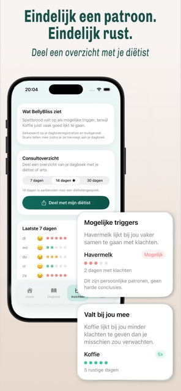

Voor zorgprofessionals
Een praktisch hulpmiddel voor patiënten met darmklachten
BellyBliss helpt patiënten zelfstandig voedingstriggers in kaart brengen — gebaseerd op de FODMAP-methode van de Monash University. Minder giswerk, meer inzicht voor u en uw patiënt.
Binnenkort weer beschikbaar in Nederland

